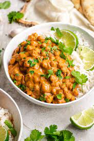

Chicpea Curry

Description
This is a recipe that explains how to make a chickpea curry the perfect meal for when you are craving something more advanced than air frying but not too difficult with minimal chopping. It's great at scratching that indian food itch without the use of tomatoes for my gerd peeps and doesn't require hours of cooking and spices you've never heard of (If you haven't heard of garam masala you are a pleb and I don't respect you)
Now i will admit it does have some ingredients you may not have in your fridge right away but nothing too crazy and chickpeas are packed full of protein (don't fact check me I'm guessing) they are also super cheap. What even is a chickpea, I don't think anyone knows and I don't care to know, I would hate to find out where the chick comes in to play. Anyway bone apple teeth!.
Ingredients
- 1 tbsp coconut oil
1 large red onion thinly sliced
- 3 cloves garlic minced
- 1 tbsp garam masala
- 1/4 tsp ground black pepper (reduce to 1/8 tsp if freshly-ground)
- 1/4 tsp cayenne pepper (or to taste)
- 1/4 tsp salt (plus more to taste)
- and 1/2 cups full-fat coconut milk (equal to 1 14-oz. can)
- and 3/4 cups cooked chickpeas (equal to 1 16-oz. can; drain and rinse before using)
- 2 tbsp freshly-squeezed lime juice (1 lime) (lemon also works)
- Naan (optional)
- chopped fresh cilantro (coriander) for serving
Steps
- In a large pan, heat the coconut oil over medium-high heat. Add the red onion with a pinch of salt. Cook, stirring frequently, until the onion is softened and starting to brown.
- Reduce the heat to medium. Add the garlic and ginger; stir and cook for 60 seconds or until fragrant. Stir in the garam masala, turmeric, black pepper, cayenne pepper, and salt. Cook for 30 seconds more to toast the spices.
- Stir in the coconut milk and chickpeas. Bring the mixture to a boil, then reduce the heat to medium-low.
- Simmer the coconut chickpea curry for about 10 minutes or until reduced slightly. Stir in the fresh lime juice. Season to taste with additional salt (I used about another 1/2 teaspoon at this point). Serve hot, over rice or other accompaniments of choice, and garnished with chopped fresh cilantro.
- Serve with Naan
- Enjoy!